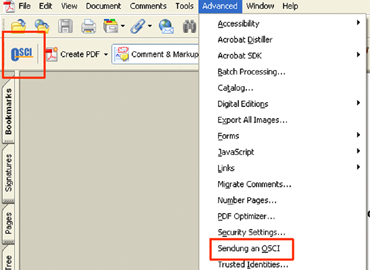
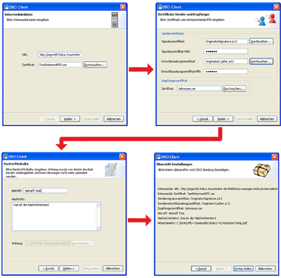

Following page is held in german for it is was written a while ago and is also primarily directed to german university starters.
Habe das Informatik Studium im Wintersemester 2001/2002 an der TU-Berlin begonnen und habe es im Februar 2007 abgeschlossen. Meine Schwerpunkte waren dabei Softwaretechnik und Wirtschaftsinformatik.
Grundstudium
Mein Grundstudium dauerte 4 Semester. Erster Tag im Audimax (größter Vorlesungssaal der TU-Berlin) war etwas ernüchternd. Man verkündete (eine gewisse Schadenfreude war nicht zu üerhören), dass nur 30% aller Studenten einen Diplomabschluss schaffen, der Rest im Grundstudium (50%) und im Hauptstudium (20%) hängen bleibt. Das erste Semester denke ich war das härteste, wo man frisch vom Zividienst wieder in harten Lernstoff geworfen wurde. Zudem bis auf zwei Praktikumskurse nur Theorie, und das 4 Semester lang. Aus damaliger Sicht war das natürlich nicht ganz nachzuvollziehen, aber aus heutiger Sicht möchte ich das Grundstudium nicht missen und ist immer noch eine gute Basis meines heutiges Arbeitslebens (“nicht ist praktischer als eine gute Theorie…”). Auf Kurse des Grundstudiums gehe ich nicht genauer ein, da der Stundenplan im Grundstudium sowieso ziemlich einheitlich sind (fast nur Pflichkurse). Zudem ist durch die Bachelorumstellung sowieso alles anders.
Hauptstudium
Nach 4 Semestern ging es mit dem Hauptstudium weiter. Jetzt hatte man endlich
die Freiheit sich seinen Stundenplan selbst zusammenzustellen. Mein Interesse lag in der Softwaretechnik (SWT) und Wirtschaftsinformatik (SYSEDV), so dass die meisten Kurse in diesen Fachbereichen lagen. Nachfolgend die besuchten Blöcke:
Basisblock
Im Basisveranstaltungsblock besuchte ich folgende Kurse (in Klammern steht
immer der zugehürige Fachbereich):
- Grundlagen Systemanalyse (SYSEDV)
- Softwaretechnik (SWT)
- Internet und Protokolle (damals IVS, jetzt KBS)
- Grundlagen der Informationsmodellierung (CIS)
- Informatik und Gesellschaft (IG)
Wahlfachblock
Im Wahlfachblock konnte man sich querbeet seine Kurse zusammenwählen und war nicht auf einen Fachbereich festgefahren. Zudem ist es Pflicht eine bestimmte Anzahl von Kursen außerhalb der Informatik zu wählen.
- Projekt Systemanalyse: Service Orientierte Architekturen (SYSEDV)
- International Project Management (SYSEDV)
- Rechnergestützte Systemanalyse (SYSEDV)
- E-Business aus Sicht der Praxis (SYSEDV)
- Projekt Präsentationsschicht Personprofiler (OKS)
- Entwurf softwaretechnischer Infrastrukturen (CIS)
- Modellierung verteilter Systeme mit UML2, MDA, MOF (FLP)
- Projekt Tool Collaboration Platform für Systemmodellierung (FLP)
- Entwicklung Verteilter Anwendungen (damals IVS, jetzt KBS)
- Teamentwicklung (Kurs außerhalb d. Informatik)
- Projektarbeit (Kurs außerhalb d. Informatik)
- Grundlagen des Management: Marketing, Innovationsmanagement, Allgemeine BWL, Logistik (Kurs außerhalb d. Informatik)
- Geschichte des Jazz (Kurs außerhalb d. Informatik)
- Ringvorlesung Technikgeschichte (Kurs außerhalb d. Informatik)
Schwerpunkt (SSG/Softwaretechnik)
Man muss sich immer mindestens einen Schwerpunkt aussuchen. Ich habe mich für
Softwaretechnik entschieden. Aus Sicht der Stunden war mein zweiter Schwerpunkt praktisch Wirtschaftsinformatik, habe es aber dem Wahlfachblock zugeordnet.
- Software-Engineering Projekt (SWT)
- Methoden und Werkzeuge zur Softwareproduktion: Schwerpunkt Testen (SWT)
- Seminar Refactoring (SWT)
- Seminar Typsysteme (SWT)
Diplom
Die Diplomarbeit (download) habe ich im Kontext des E-Government Labors des praxisorientierten Fokus Fraunhofer Instituts geschrieben. Das Thema war “Sicherer Dokumentenaustausch im E-Government mit OSCI und Acrobat/PDF”. Die praktische Aufgabe war die Entwicklung einer Integrationslösung für das OSCI-Protokoll und der Adobe Acrobat Applikation. Bei der Integrationslösung handelt es sich um ein Plugin, mit der ein rechtskonformes Signieren von PDF Dokumenten möglich ist (siehe screenshots unten).
Plugin-Aktivierungs Icon über Toolbar und Menü:

Workflow des Signaturvorgangs:

Studiums-Fazit
Zunächst: die TU-Berlin/Informatik ist zwar aus Sicht der Direktmittel zwar nicht optimal ausgestattet und es existieren ziemlich viele Studenten in der, aber es ist mit der richtigen Einstellung auf jeden Fall möglich ein Diplom zu erhalten und sehr gut ausgebildet zu sein: Es gibt Kurse und Dozenten, die gutes Wissen und Praxis vermitteln, die Sprechstunden sind zeitig ausreichend (wenn man persönlichen Kontakt mit Tutoren und Dozenten sucht, ist er auch da). Zudem sind einige Fachbereiche durch große Aufwände durch Drittmittel dennoch ganz gut ausgestattet und hat viele Partner in der Wirtschaft.
Ich hab auch Kursinhalte mit anderen Unis (z.B. prominente TU München, Hasso Plattner Institut) verglichen. Ergebnis war, dass die Lehrinhalten Ähnlich sind wie bei den Kursen der TU Berlin. Insofern gibt es (bis jetzt) am Informatik Studium der TU noch nichts zu beanstanden. Ich würde sogar behaupten, dass die Fachbereiche der Softwaretechnik (SWT), Wirtschaftsinformatik (SYSEDV) und Gesellschaft für Informatik (IG) deutschlandweit absolut top sind. Wenn die Einsparungen aber weiter gehen und die Betreuung und Kursquantität/qualität darunter leidet, könnte sich das in Zukunft natürlich ändern.
Ein großer negativer Punkt ist, dass viele Kurse mehr Nachfrage als Angebot haben. Beispiel Softwaretechnik: Hier war das Verhältnis Angebot/Nachfrage immer so schlimm, dass ein Losverfahren eingeführt wurde, wodurch sich das Studium ungewollt in die Länge ziehen kann. Schuld ist meiner Meinung nicht der Fachbereich sondern die Resourcen der Uni, die eine Einstellung weiterer Dozenten finanziell nicht ermöglichen. Zudem besteht zu anderen sog. “Elite-Unis” (=stumpfer Begriff) garantiert ein Unterschied, was die Rechneraustattung im Rechnerzentrum angeht.
Hier eine Übersicht der besten und schlechtesten Kurse, die ich besucht habe. Lag nicht daran, dass die Materie nicht interessant war sondern weil die Kurse
einfach nur schlecht, unmotiviert durchgeführt und einer Universität unwürdig waren:
the worst (definitely):
- Technische Informatik I (Grundstudium RT)
- Technische Informatik II (Grundstudium RT)
- Entwurf softwaretechnischer Infrastrukturen (Hauptstudium CIS)
the best:
- Software-Engineering Projekt (SWT)
- Projekt Systemanalyse: Service Orientierte Architekturen (SYSEDV)
- Objektorientierte Modellierung verteilter Systeme (FLP)
- Information Rules: Informatik und Gesellschaft (IG)
- Teamentwicklung (Kurs außerhalb d. Informatik)
- Grundlagen des Management: Marketing, Innovationsmanagement, Allgemeine BWL, Logistik (Kurs außerhalb d. Informatik)
- Ringvorlesung Technikgeschichte (Kurs außerhalb d. Informatik)
Noch kurz etwas zur Studiumslänge von 9 Semestern. Es existieren gewisse Umstände, die das Studium unverschuldet in die Länge ziehen können (Lospech, persönliche/familiäre Probleme, Kind, viele Nebenjobs etc.). Falls diese Umstände nicht existieren ist mit der richtigen Einstellung/Motiviation/Interesse die Länge von 9 Semestern aber absolut machbar.
Bachelor/Master-Umstellung
Die Studienordnung und die damit zusammenhängenden Möglichkeiten, wie ich mir das Studium zusammenstellen konnte, ist heute durch die Umstellung auf Bachelor und Master nicht mehr möglich. Einerseits könnte die Vereinheitlichung und damit zusammengehende Akzeptanz der Abschlüsse in anderen Länder Vorteile bringen, ich sehe die Umstellung allerdings eher kritisch. Es existieren fast keine Wahlmöglichkeiten, die Alternativen sind im Vergleich zu früher sehr eingeschränkt. Die Vorteile der Uni, dass man nach eigenen Orientierungen querbeet interdisziplinär Kurse mischen konnte sind daher vorbei und Eigeninitiative ist in der Planung fast nicht mehr gefragt, was im späteren Berufsleben absolut nötig ist.
Darüberhinaus kommt es mir suspekt vor, dass man mit einem Bachelor, der der Länge des alten Grundstudiums entspricht, anfangen soll in der Berufswelt einzusteigen. Ich wäre damals auf keinen Fall vorbereitet gewesen, da die Theorie-Grundlagen erst im Hauptsstudium (jetzt Master) Sinn machen und sich dort die gewünschten “Aha”-Effekte einstellen. Ein universitäres Informatik-Studium macht daher ohne Master einfach keinen Sinn. Insgesamt bin ich der Meinung, dass die Abschaffung des “alten” Diploms ein Fehler war und das schließlich auch wegen der interdisziplinären Strukturierung des Studiums, die Absolventen deutscher Universitäten auch im Ausland immer gern gesehen waren. So viel kann am Diplom doch nicht falsch gewesen sein…
Tips
Hier kurz und knapp einige Punkte, die mir beim Studium geholfen haben:
- Ausgleich ist wichtig: Es gibt noch sowas wie Sport, Musik und Kultur…
- Last euch nicht von Dünnbrettbohrern ausnutzen. Wenn man sich alles gefallen lässt, hat man solche Genossen nämlich in jedem Kurs in seiner Gruppe.
- Teamarbeit: ist unabdingbar und macht auch Spaß, auch später im Berufsleben. Am besten man sucht sich ein paar zuverlässige Leute und macht mit denen soweit man gleiche Kurse belegt gemeinsame Gruppen.
- Hört und fragt rum, welche Kurse schlecht bzw. gut sind.
- Man sollte sich privat fachlich weiterbilden, da die Kurse oft nicht ausreichend sind und nur Einführungen geben. Lernt Programmiersprachen, Frameworks, Methoden, Design etc.
- Lesen, lesen, lesen: Es gibt sehr gute Bücher (meist auf Englisch) und zudem ist die Qualität im Internet verfügbarer Texte bei passender Recherche ebenfalls sehr gut. Speziell Blogs geben immer wieder Anregungen. Zudem hat es mir sehr geholfen Zeitschriften (bspw. c’t, javamagazin, objektspektrum) zu abonnieren, die aktuellste Themen ansprechen.
- Zieht eurer Grundstudium (oder Bachelor) konzentriert in 4/5 Semestern durch. Es ist es nicht wert sich länger mit den Grundlagen-Kursen zu beschäftigen. Die interessanteren Kurse sind im Haupstudium/Master zu finden.
- Sucht euch einen Job, der mit eurem späteren Beruf zu tun hat (Praktikum oder studentische Hilfskraft), da sieht man nämlich, wie die unakademische Welt funktioniert.
- Die Diplomarbeit ist eure letzte “große” Arbeit an der Uni. Sucht euch unbedingt ein interessantes Thema. Wenn man nachfragt und nachforscht ergeben sich viele Möglichkeiten bei einer Firma oder an anderen praxisorientierten Instituten.